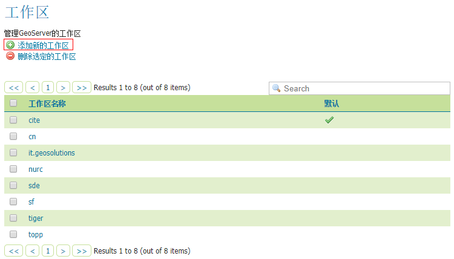
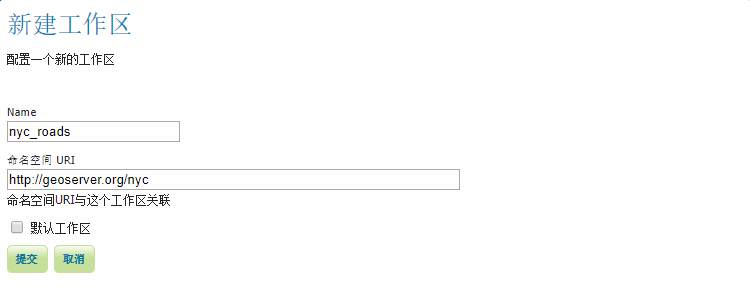
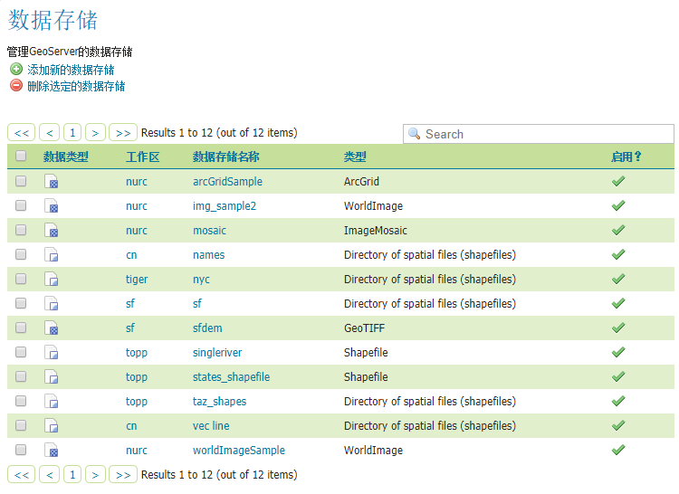
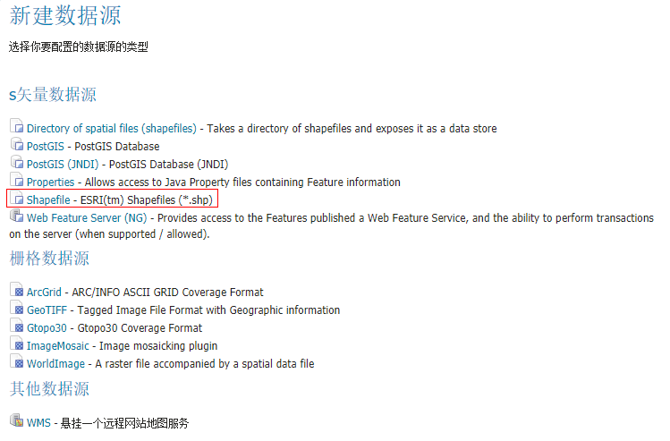
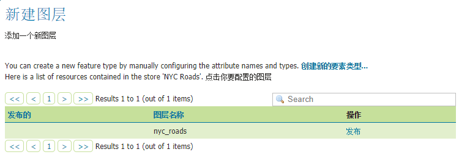
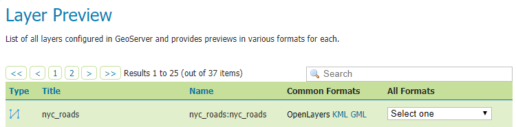
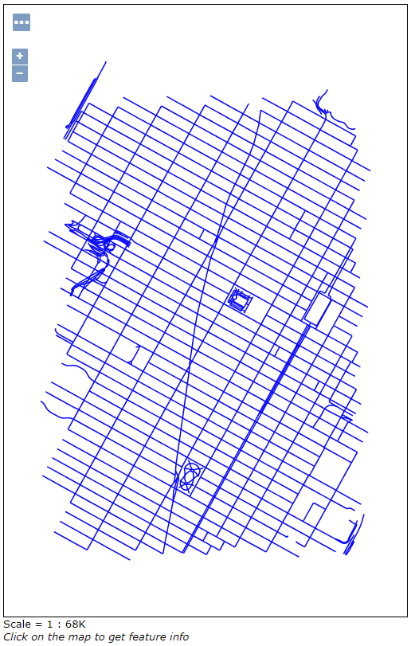

发布Shapefile图层
此文介绍如何将Shapefile数据通过GeoServer发布。
准备数据
数据源就使用官方文档中使用的nyc_roads.zip,
下载后解压后得到nyc_roads文件夹，文件夹内应该有以下四个文件
nyc_roads.shp
nyc_roads.shx
nyc_roads.dbf
nyc_roads.prj
将nyc_roads文件夹放入GeoServer的<GEOSERVER_DATA_DIR>/data目录中，
其中<GEOSERVER_DATA_DIR>是安装时的数据目录，默认为../geoserver/data_dir。
创建一个工作区
在前文中讲到。工作区是一个服务的数据集合。 新建一个工作区用来发布服务。
导航到工作区。
在工作区选项卡中，下方是工作区列表，点击“添加新的工作区”来创建工作区。

在Name中填写nyc_roads,这是工作区的名称，会影响到服务地址，此时服务地址为localhost:8080/geoserver/nyc_roads。
在命名空间 URI中填写http://geoserver.org/nyc，该路径是名称空间，不需要是有效的Web地址。

点击提交就添加nyc_roads到工作区列表中了。
创建一个数据存储
数据存储是将数据文件链接到GeoServer中，所以需要添加一个数据存储链接Shapefile文件。
导航到数据存储。
在数据存储标签页中有现有的数据存储列表，点击添加新的数据存储。

因为我们的数据源是Shapefile，所以选择Shapefile项。

在新建矢量数据源页面中，工作区选择nyc_roads,
数据源名称填写NYC Roads，说明填写Roads in New York City。
Shapefile文件的位置文本框右边有浏览…，点击选择准备的nyc_roads.shp。
DBF字符集选择GB2312，这样能够支持中文属性字段。

点击保存就会导航到新建图层页面，接下来要创建图层。
创建一个图层
在新建图层页面，点击图层名nyc_roads右边的发布发布。

在编辑图层界面，可以修改命名，标题和摘要。

在边框中分别点击从数据中计算和Compute from native bounds。

想要了解其他设置项，可以在官网 获取更多信息。
在这里我们点击保存就完成了图层的创建。
浏览
图层创建后能够在Layer Preview中找到，点击右边的OpenLayers在Openlayers地图中预览。


如果需要使用WMS服务，则服务地址为localhost:8080/geoserver/nyc_roads/wms，可以访问的图层就是nyc_roads，
更多WMS参数可以到这里查看。